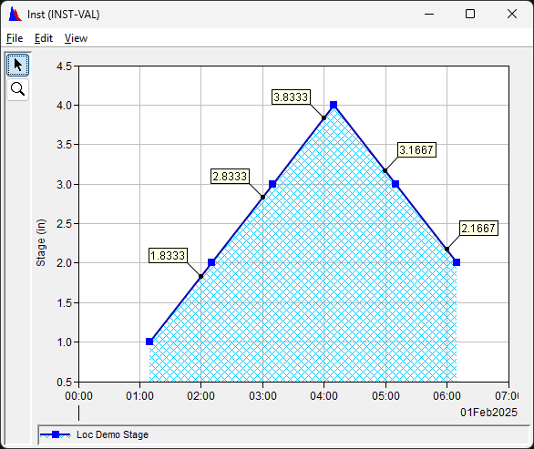
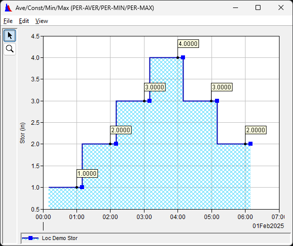
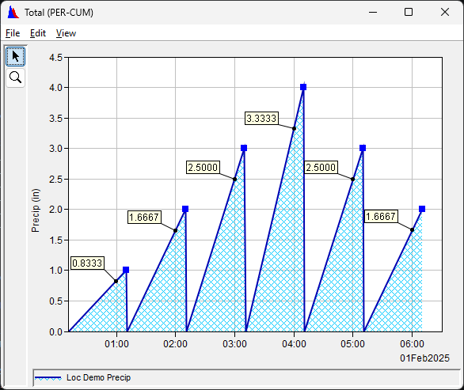

hec.timeseries
Provides time series types and operations
Exception specific to time series operations
Holds a single time series value
Initializes a TimeSeriesValue object
Arguments:
- time (Any): The time. Must be an HecTime object or convertible to an HecTime object
- value (Any): The value. Must be a UnitQuantity object or convertible to a UnitQuantity object
- quality (Union[Quality, int], optional): The quality code. Must be a Quality object or a valid quality integer. Defaults to 0.
Returns whether two TimeSeriesValue objects are equal to the specified strictness. If the strictness indicates comparing the value fields, the comparison can use either of the following for value equality:
- normal: equivalent values are considered equal even if they have different units. (e.g., 12 in == 1 ft)
- strict: values must have same magnitude and units to be considered equal
Arguments:
- other (object): The other TimeSeriesValue object to compare to
- degree (int): Specifies how strict to make the comparison. Valid values are:
1: Compares only time fields (same as == operator).2: Compares only time and value fields with normal value equality.3: Compares only time and value fields with strict value equality.4: Compares time, value, and quality fields with normal value equality.5: Compares time, value, and quality fields with stict value equality.
Defaults to4
Returns:
bool: Whether the time, value, and quality of two TimeSeriesValue objects are equal to the specified strictness.
Holds time series and provides time series operations.
Structure
TimeSeries objects contain the following properties
watershed(Optional): A string that holds the the DSS A pathname part. Unused in CWMS contexts.location(Required): A Location object. Itsnameproperty is used for the CWMS location identifier or DSS B pathname part.parameter(Required): A Parameter object. May be an ElevParameter if the base parameter is "Elev", but only if there is vertical datum info. Itsnameproperty is used for the CWMS parameter identifier or DSS C pathname part.parameter_type(Optional): A ParameterType object. Itsnameproperty is used for the CWMS parameter type identifier or DSS data typeinterval(Required): An Interval object. Itsnameproperty is used for the CWMS interval identier or DSS E pathname poartduration(Optional): A Duration object. Itsnameproperty is used for the CWMS duration identifier. Unused in DSS contexts.version(Optional): A string that holds the CWMS version identifier or DSS F pathname part.data(Optiona): A pandas.DataFrame object containing the time series data. The DataFrame has a DateTime index, a float column named "value" and a integer column named "quality"
Other properties
name: The name used to initalize the object. Will be a valid CWMS time series identifier or DSS time series pathname.unit: The unit of the parameter. Also available as theunit_nameproperty of theparameterproerty.time_zone: The time zone of the data or None if not setvertical_datum_info_xml: The vertical datum info as an XML stringvertical_datum_info_dict: The vertical datum info as a dictionarytimes: The times of the data values as a list of stringsvalues: The data values as a list of floatsqualities: The quality codes of the data values as a list of integersslice_stop_exclusive: Controls slicing behavior
Indexing and slicing
In addition to operations available on the data DataFrame, TimeSeries objects may also be indexed by
individual indexes or slices.
The result of an index or slice operation is a copy TimeSeries object with the data as indicated in the index or slice.
Indexes (single, as well as start and stop values for slices) may be one of:
- HecTime object
- datetime object
- String - must be in the format yyyy‑mm‑dd hh:mm:ss([+|‑]hh:mm). The time zone portion is required if the data times have the time zone specified
- Integer (index into the list of data times using normal python indexing)
Slice steps are supported and must be a positive integer value (times must always increase)
By default, slicing follows python behavior where the stop value is exclusive (not included in the returned data). To use DataFrame behavior where the stop value is inclusive (returned in the data):
- call
TimeSeries.set_slice_stop_inclusive()before creating any TimeSeries objects - set the
slice_stop_exclusiveproperty to False on existing TimeSeries objects.
Note that slicing of the data object will always use DataFrame behavior.
In-Place Methods
All methods that return a time series have an optional parameter named in_place that defaults to False:
- Leaving unspecified or specifying
Falsewill cause the method to return a new time series, leaving the time series on which the method is called unchanged and available for future use. - Specifying
Truewill modify the time series on which the method is called and return the modified time series. The return value may of course be ignored if desired.
Each of these method also has a "in-place" method without the in_place parameter and which simply calls the original
method with in_place=True. The methods are named the same as the original methods prepended with the letter 'i' (e.g.,
select() --> iselect(), set_parameter() --> iset_parameter())
Initializes a new TimeSeries object. To generate a new regular interval time series using start time, end time, interval, and offset
see also new_regular_time_series()
Arguments:
- name (str): The time series name. Must be either a CWMS time series identifier or HEC-DSS time series pathname.
- If CWMS
- The following components are set from the identifier:
- location (may be in the format <office>/<location> to set office)
- parameter
- parameter type
- interval
- duration
- version
- The following components are not set:
- watershed
- The following components are set from the identifier:
- If HEC-DSS
- The following components are set from the pathname:
- A => watershed
- B => location
- C => parameter
- E => interval
- F => version
- The following components are set by default:
- parameter type:
- INST_CUM if C includes "Precip" (case insensitive)
- INST_VAL otherwise
- parameter type:
- The following compents are not set:
- duration
- The following components are set from the pathname:
- The parameter unit is set to the default English unit
- No vertical datum information is set for elevation parameter
- If CWMS
- times (Optional[Union[list[Union[HecTime, datetime, str]], pd.DatetimeIndex]]): The times for the time series. If specified, all times must have the same time zone or no time zone.
If not specified,
values,qualities, andtime_zonemy not be specified. Defaults to None. - values (Optional[Union[list[float], float]]): A value or a list of values to assign to the specified times. If a single value or a list of values shorter than the list of times, the
specified value(s) is/are repeated until each time has an assigned value. Must be specified if
times is specified. Defaults to None. - qualities (Optional[Union[list[Union[Quality, int]], Quality, int]]): A quality code or object or a list of quality codes or objects to assign to the specified times. If a single quality
or a list of qualities shorter than the list of times, the specified quality(ies) is/are repeated until each time has an assigned quality. If not specified and
timesis specified, each time will be assigned a quality code of zeor.Defaults to None. time_zone (Optional[str]): The time zone of the time series. If specified, must be a valid time zone name or "local". Interaction with the time zone of the
timesargument is as follows. Defaults to None.timeshas time zonetime_zonespecifiedTime series time zone False False local time zone False True as specified in time_zoneTrue False as specified in timesTrue True as specified in time_zonetimesare converted totime_zone
Returns a time series whose values are the accumulation of values in this time series.
Missing values are ignored; the accumulation at those times is the same as for the previous time.
If a selection is present, all non-selected items are set to missing before the accumulation is computed. They remain missing in the retuned time series.
Restrictions
- May be performed only on time series with accumulatable base parameters. Use Parameter.accumulatable_base_parameters() to list the accumulatable base parameters.
- May be performed only on Instantaneous, Average, or Total time series (CWMS: Inst, Ave, Total, DSS: INST-VAL, INST-CUM, PER-CUM)
See base_parameter_definitions for information on base parameters and their conversions.
Arguments:
- in_place (bool, optional): If True, this object is modified and retured, otherwise a copy of this object is modified and returned.. Defaults to False.
Raises:
- TimeSeriesException: If the time series has no data or one of the restrictions listed above is violated.
Returns:
TimeSeries: The accumulation time series
Perform an aggregation of the values in a time series time series.
Arguments:
- func (Union[list[Union[Callable[[Any], Any], str]],Callable[[Any], Any], str]): The aggregation function(s).
May be one of:
- list[Union[Callable[[Any], Any], str]]: A list comprised of items from the following two options (note that there is overlap between the python builtin functions and the pandas functions)
- Callable[[Any], Any]: Must take an iterable of floats and return a float timeseries
May be a function defined in the code (including lambda funtions) or a standard python aggregation function:allanylenmaxminsummath.prodstatistics.fmeanstatistics.geometric_meanstatistics.harmonic_meanstatistics.meanstatistics.medianstatistics.median_groupedstatistics.median_highstatistics.median_lowstatistics.modestatistics.multimodestatistics.pstdevstatistics.pvariancestatistics.quantilesstatistics.stdevstatistics.variance
- str: Must be the name of a pandas aggregation function:
"all""any""count""describe""first""last""max""mean""median""min""nunique""prod""sem""size""skew""std""sum""var"
Raises:
- TimeSeriesException: If the time series has no data, or if there are less than two items
- to aggregate over.
Returns:
The result of the aggregation function(s)
Generate a time series that is an aggregation of multiple time series.
Note that some usages (marked with 1, 2, 3, or 4) generate non-standard TimeSeries results.
In these cases the .data property of the TimeSeries should be used directly instead of using the .values property or using the
TimeSeries in further operations.
Arguments:
- func (Union[list[Union[Callable[[Any], Any], str]], Callable[[Any], Any], str]): The aggregation function(s).
May be one of:
- list[Union[Callable[[Any], Any], str]]1: A list comprised of items from the following two options (note that there is overlap between the python builtin functions and the pandas functions)
- Callable[[Any], Any]: Must take an iterable of floats and return a single value
May be a function defined in the code (including lambda funtions) or a standard python aggregation function:all2any2lenmaxminsummath.prodstatistics.fmeanstatistics.geometric_meanstatistics.harmonic_meanstatistics.meanstatistics.medianstatistics.median_groupedstatistics.median_highstatistics.median_lowstatistics.modestatistics.multimode3statistics.pstdevstatistics.pvariancestatistics.quantiles3statistics.stdevstatistics.variance
- str: Must be the name of a pandas aggregation function:
"all"2"any"2"count""describe"1"first""last""max""mean""median""min""nunique""prod""sem""size"4"skew""std""sum""var"
- timeseries (list[TimeSeries]): The time series for the function to aggregate over
2The "Values" column of the `.data` property contains bool values float values
3The "Values" column of the `.data` property contains lists of values instead of float values.
4The `.data` property is a DataFrame with one unnamed column.
Raises:
- TimeSeriesException: If less than two of the time series have data, or if the time series have no common times.
Returns:
TimeSeries: The time series that is the result of the aggregation function. The times series name will be modified from the first time series specified in the following way:
- The parameter will be "Code"
- the version will be "Aggregate"
Returns whether the unit of this time series is recognized as an English unit, or a Metric unit, but not both
Operations:
Read Only
Computes and returns a time series that is the centered moving average of this time series.
A centered moving average sets the value at each time to be the average of the values at that time and a number of previous and following consecutive times.
Arguments:
- window (int): The number of values to average over. The result at each time will be the average of the values at ((window-1)/2) previous times, the value at the current time, and the values at ((window-1)/2) following times. The span between times is not accounted for so discretion should be used if the time series is irregular. Must be an odd number.
- only_valid (bool): Specifies whether to only average over windows where every value is valid. If False, the average at any given time may be computed using fewer values that specified in the window parameter.
- use_reduced (bool): Specifies whether to allow averages using less than window number of values will be computed at the beginning and end of the times series. If False, the values at the first and last ((window-1)/2) times will be set to missing.
- in_place (bool, optional): If True, this time series is modified and returned. Otherwise this time series is not modified. Defaults to False.
Raises:
- TimeSeriesException: If the time series has no data or if the window is invalid.
Returns:
TimeSeries: The averaged time series
Creates a copy of this object, with or without data
Arguments:
- include_data (bool, optional): Specifies whether to include the data in the copy. Defaults to True.
Returns:
TimeSeries: The copy of this object
Collapses a regular time series (either this one or a copy of this one), removing all missing values unless they are either protected or marked as part of the current selection.
Irregular time series (including pseudo-regular time series) are not affected.
Does not alter any selection, even if selection state is SelectionState.TRANSIENT. Selected items remain
selected after collapse even though their location in the data may change.
Arguments:
- in_place (bool, optional): Specifies whether to collapse this time series (True) or a copy of this time series (False).
- Defaults to False.
Returns:
TimeSeries: The collapsed time series
The context of the time series. Valid contexts are "CWMS" and "DSS"
Operations:
Read/Write
Converts a time series (either this one or a copy of it) to the spcified time zone and returns it
Arguments:
- time_zone (Union[HecTime, datetime, ZoneInfo, str]): The target time zone or object containg the target time zone.
Use
"local"to specify the system time zone. - on_tz_not_set (int, optional): Specifies behavior if this object has no time zone attached. Defaults to 1.
0: Quietly behave as if this object had the local time zone attached.1: (default) Same as0, but issue a warning.2: Raise an exception preventing objectes with out time zones attached from using this method.
- in_place (bool): Specifies whether to convert this time series (True) or a copy of it (False). Defaults to False
Returns:
TimeSeries: The converted time series
Generates cyclic analysis statistics on this TimeSeries.
The time series must have an interval of 1Hour, 1Day or 1Month. In all cases the statistics are computed for a 1 year cycle reported as year 2100: * 1Hour: Statistics are computed on 8760 1-hour bins * 1Day: Statistics are computed on 365 1-day bins * 1Month: Statistics are computed on 12 1-month bins
The statistics returned are (in order):
- Count of valid values in each bin
- Date/time of maximum value in each bin
- Date/Time of minimum value in each bin
- The average (arithmetic mean) of the values in each bin
- The maximum value each bin
- The minimum value each bin
- The 5th percentile value each bin computed according to the specified method
- The 10th percentile value each bin computed according to the specified method
- The 25th percentile value each bin computed according to the specified method
- The 50th percentile value each bin computed according to the specified method
- The 75th percentile value each bin computed according to the specified method
- The 90th percentile value each bin computed according to the specified method
- The 95th percentile value each bin computed according to the specified method
- The standard deviation of the values in each bin
The values for date/time statistics are the year of the min or max value (Java code uses yyyy.mmdd on 1Hour statistics).
The report year is 2100. The Java code report year of 3000 is not used due to current limitations of the pandas.DatetimeIndex type.
Arguments:
- method (str): The method to use for generating the probability statistics. Must be one of the following. Defaults to 'linear'.
- 'hecmath': Specifies using the alorithm used in the Java
hec.hecmath.TimeSeriesMath.cyclicAnalysis()method, which performs a version of nearest-rank percentile. - others: Specify the NumPy method to use for numpy.percentile(). Must be one of
- 'averaged_inverted_cdf'
- 'closest_observation'
- 'hazen'
- 'higher'
- 'interpolated_inverted_cdf'
- 'inverted_cdf'
- 'linear'
- 'lower'
- 'median_unbiased'
- 'midpoint '
- 'nearest'
- 'normal_unbiased'
- 'weibull'
- 'hecmath': Specifies using the alorithm used in the Java
Raises:
- TimeSeriesException: if the time series is empty or an invalid method is specified.
Returns:
list[TimeSeries]: The 14 time series containing the cyclic analysis statistics
The data as a DataFrame or None if not set. Note this exposes the interal DataFrame object to
allow direct modification. For uses that should not modify this TimeSeries object, the DataFrame
should be copied using its copy() method prior to modification (e.g., df = ts.data.copy())
Operations:
Read Only
Returns a time series whose values are the differences of successive values in this time series.
A missing value at a specific time in the source time series will cause the value at that and the next time in the result time sereies to be missing.
If a selection is present, all non-selected items are set to missing before the accumulation is computed. They remain missing in the retuned time series.
Restrictions
- May be performed only on time series with accumulatable base parameters. Use Parameter.accumulatable_base_parameters() to list the accumulatable base parameters.
- May be performed only on Instantaneous, Average, or Total time series (CWMS: Inst, Ave, Total, DSS: INST-VAL, INST-CUM, PER-CUM)
See base_parameter_definitions for information on base parameters and their conversions.
Arguments:
- in_place (bool, optional): If True, this object is modified and retured, otherwise a copy of this object is modified and returned.. Defaults to False.
Raises:
- TimeSeriesException: If the time series has no data.
Returns:
TimeSeries: The time series of differences
Estimates missing values in a time series using specified criteria, and returns the estimated time series (either this time series or a copy of it). Values are estimated using linear interpolation between the bounding valid values
Arguments:
- max_missing_count (int): The maximum number of consecutive missing values that will be replaced with estimates.
Groups of consecutive missing values larger than this number remain missing (except see
accumulation). - accumulation (bool, optional): Specifies whether the time series is an accumulation (e.g., cumulative precipitaion).
The estimation behavior for accumulation time series differs in that
- If the bounding valid values for a group of consecutive missing values decrease with increasing time, no estimations are performed
- If the bounding valid values for a group of consecutive missing values are equal, the all missing values in the group are replaced
with the same value, without regard to
max_missing_countDefaults to False.
- estimate_rejected (bool, optional): Specifies whether to treat values in the time series with Rejected quality as missing. Defaults to True.
- set_questioned (bool, optional): Specifies whether to set the quality for estimated values to Questionable. If False, quality is set to Okay. Defaults to True.
- in_place (bool, optional): Specfies whether to modify and return this time series (True) or a copy of this time series (False). Defaults to False.
Raises:
- TimeSeriesException: If there are no values in the time series
Returns:
TimeSeries: The estimated time series
Expands a regular time series (either this one or a copy of this one) so that there are no gaps in time
(fills gaps with missing values) and returns the expanded time series. If start_time and/or end_time
are specified, the times between the start_time and the first time and between the last time and the end_time
are considered as gaps to be filled.
Irregular time series (including pseudo-regular time series) are not affected.
Does not alter any selection, even if selection state is SelectionState.TRANSIENT. Selected items remain
selected after expansion even though their location in the data may change.
Arguments:
- start_time (Optional[Union[str, datetime, HecTime]]): The beginning of the timespan before the first time to fill with missing values. Does not need to fall on the time series interval. If not at least one full interval prior to the first time, no missing values will be inserted before the first time. Defaults to None.
- end_time (Optional[Union[str, datetime, HecTime]]): The end of the timespan after the last time to fill with missing values. Does not need to fall on the time series interval. If not at least one full interval after the last time, no missing values will be inserted after the last time. Defaults to None.
- in_place (bool, optional): Specifies whether to expand this time series (True) or a copy of this time series (False).
- Defaults to False.
Returns:
TimeSeries: The expanded time series
Filters a time series (either this one or a copy of this one) and returns the results. The returned time series will contain only the selected or unselected items in the original time series.
Arguments:
- unselected (bool, optional): Specifies including only selected itmes (False) or only unselected items (True). Defaults to False.
- in_place (bool, optional): Specifies whether to modifiy this time series (True) or a copy of it (False). Defaults to False.
Returns:
TimeSeries: The filtered time series
Convenience method for executing fileter(...) with in_place=True.
The time of the first valid value in the time series. Values are valid unless any of the following are true:
- The quality is MISSING
- The quality is REJECTED
- The value is NaN
- The value is Infinite
Operations:
Read Only
The first valid value in the time series. Values are valid unless any of the following are true:
- The quality is MISSING
- The quality is REJECTED
- The value is NaN
- The value is Infinite
Operations:
Read Only
Returns the result of fmod() of the values of this time series with either a constant or another time series.
Arguments:
- amount (Union[TimeSeries, UnitQuantity, float, int]): The constant or time series to use in the operation
- in_place (bool, optional): Whether to modify and return this time series. Defaults to False.
Returns:
TimeSeries: the resulting time series
Formats a time item for indexing into the times of this object. The formatting depends on
the setting of this object's mindnight_as_2400 property
Arguments:
- item (Union[HecTime, datetime, str]): The time item to format.
Returns:
str: The formatted string with the midnight setting of this object
Computes and returns a time series that is the forward moving average of this time series.
A forward moving average sets the value at each time to be the average of the values at that time and a number of previous consecutive times.
Arguments:
- window (int): The number of values to average over. The result at each time will be the average of the values at (window-1) previous times and the value at the current time. The span between times is not accounted for so discretion should be used if the time series is irregular.
- only_valid (bool): Specifies whether to only average over windows where every value is valid. If False, the average at any given time may be computed using fewer values that specified in the window parameter.
- use_reduced (bool): Specifies whether to allow averages using less than window number of values will be computed at the beginning of the times series. If False, the values at the first (window-1) times will be set to missing.
- in_place (bool, optional): If True, this time series is modified and returned. Otherwise this time series is not modified. Defaults to False.
Raises:
- TimeSeriesException: If the time series has no data or if the window is invalid.
Returns:
TimeSeries: The averaged time series
Returns a new Parameter object appropriate for differentiating this time series with respect to time.
The new parameter will preserve any sub-parameter of this time series as well as the unit system of this time sereis.
Raises:
- TimeSeriesException: If time series is not integrable (see Parameter.differentiable_base_parameters)
Returns:
Parameter: The new parameter object
Returns a new Parameter object appropriate for integrating this time series over time.
The new parameter will preserve any sub-parameter of this time series as well as the unit system of this time sereis.
Raises:
- TimeSeriesException: If time series is not integrable (see Parameter.integrable_base_parameters)
Returns:
Parameter: The new parameter object
Returns whether another time series has the same times as this time series.
Arguments:
- other (TimeSeries): The other time series
Returns:
bool: Whether another time series has the same times as this time series.
Convenience method for executing centered_moving_average(...) with in_place=True.
Convenience method for executing collapse(...) with in_place=True.
Convenience method for executing convert_to_time_zone(...) with in_place=True.
Convenience method for executing diff(...) with in_place=True.
Convenience method for executing estimate_missing_values(...) with in_place=True.
Convenience method for executing expand(...) with in_place=True.
Convenience method for executing forward_moving_average(...) with in_place=True.
Convenience method for executing fmod(...) with in_place=True.
Convenience method for executing map(...) with in_place=True.
Convenience method for executing label_as_time_zone(...) with in_place=True.
Convenience method for executing merge(...) with in_place=True.
Retrieves the data index of a specified object
Arguments:
- item_to_index (Union[HecTime, datetime, int, str]): The object to retrieve the index of.
- HecTime: an HecTime object
- datetime: a datetime object
- int: a normal python index
- str: a date-time string
- not_found (Optional[str]): Specifies the behavior if
item_to_indexis not in the index:- 'next': return the higher of the bounding indices of the item
- 'previous': return the lower of the bounding indices of the item
- 'stop': used for the stop index of slices - return the lower of the bounding indices plus one (unless beyond end)
- None (default): raise an IndexError
Raises:
- TimeSeriesException: If the time series has no values, or if
not_foundis specifed and is not "next" "previous", or "stop" - TypeError: If
item_to_indexis not one of the expected types - IndexError: * int: If the integer is out of range of the number of times
- Others: If no index item matches the input object
Returns:
str: The actual index item that for the specified object
Convenience method for executing olympic_moving_average(...) with in_place=True.
Convenience method for executing resample(...) with in_place=True.
Convenience method for executing round_off(...) with in_place=True.
Specifies whether the time series is a normal irregular or pseudo-regular time series
Operations:
Read Only
Specifies whether the time series is a normal regular or local regular time series
Operations:
Read Only
Returns whether the specified identifier is a valid CWMS time series identifier
Arguments:
- identifier (str): The identifier
Returns:
bool: Whether the identifier is a valid CWMS time series identifier
Returns whether the specified identifier is a valid HEC-DSS time series pathname
Arguments:
- identifier (str): The identifier
Returns:
bool: Whether the identifier is a valid HEC-DSS time series pathname
Returns whether the unit of this time series is recognized as an English unit
Operations:
Read Only
Specifies whether the time series is a normal irregular time series
Operations:
Read Only
Specifies whether the time series is a local regular time series
Operations:
Read Only
Returns whether the unit of this time series is recognized as an Metric unit
Operations:
Read Only
Specifies whether the time series is a normal irregular or pseudo-regular time series
Operations:
Read Only
Specifies whether the time series is a normal regular time series
Operations:
Read Only
Returns whether the index is in the time series and the value at the index is valid
Arguments:
- index (Union[int, str, datetime, HecTime]): The index to test.
Returns:
bool: False if any of the following are true, otherwise True:
- The time series does not contain the index
- The quality is MISSING
- The quality is REJECTED
- The value is NaN
- The value is Infinite
Convenience method for executing screen_with_constant_value(...) with in_place=True.
Convenience method for executing screen_with_duration_magnitude(...) with in_place=True.
Convenience method for executing screen_with_forward_moving_average(...) with in_place=True.
Convenience method for executing screen_with_value_change_rate(...) with in_place=True.
Convenience method for executing screen_with_value_range(...) with in_place=True.
Convenience method for executing screen_with_value_range_or_change(...) with in_place=True.
Convenience method for executing select(...) with in_place=True.
Convenience method for executing select_valid(...) with in_place=True.
Convenience method for executing set_duration(...) with in_place=True.
Convenience method for executing set_interval(...) with in_place=True.
Convenience method for executing set_location(...) with in_place=True.
Convenience method for executing set_parameter(...) with in_place=True.
Convenience method for executing set_parameter_type(...) with in_place=True.
Convenience method for executing set_protected(...) with in_place=True.
Convenience method for executing set_quality(...) with in_place=True.
Convenience method for executing set_unit(...) with in_place=True.
Convenience method for executing set_unprotected(...) with in_place=True.
Convenience method for executing set_value(...) with in_place=True.
Convenience method for executing set_value_quality(...) with in_place=True.
Convenience method for executing set_vertical_datum_info(...) with in_place=True.
Convenience method for executing snap_to_regular(...) with in_place=True.
Convenience method for executing time_derivative(...) with in_place=True.
Convenience method for executing to(...) with in_place=True.
Convenience method for executing to_irregular(...) with in_place=True.
Computes the kurtosis coefficient of the values in the time series
Raises:
- TimeSeriesException: If the time series has no data or fewer than 2 items selected.
Returns:
float: The kurtosis coefficient
Attaches the specified time zone to this object or a copy of this object and returns it. Does not change the actual times
Arguments:
- time_zone (Optional[Union["HecTime", datetime, ZoneInfo, str]]): The time zone to attach or
object containing that time zone.
- Use
"local"to specify the system time zone. - Use
Noneto remove time zone information
- Use
- on_already_set (int): Specifies action to take if a different time zone is already
attached. Defaults to 1.
0: Quietly attach the new time zone1: (default) Issue a warning about attaching a different time zone2: Raises an exception
- in_place (bool): Specifies whether to attach the time zone to this time series (True) or a copy of it (False). Defaults to False
Raises:
- TimeSeriesException: if a different time zone is already attached and
on_already_set== 2
Returns:
TimeSeries: The modified object
The time of the last valid value in the time series. Values are valid unless any of the following are true:
- The quality is MISSING
- The quality is REJECTED
- The value is NaN
- The value is Infinite
Operations:
Read Only
The last valid value in the time series. Values are valid unless any of the following are true:
- The quality is MISSING
- The quality is REJECTED
- The value is NaN
- The value is Infinite
Operations:
Read Only
Applies a function of one variable to the values of this object and returns the modified object
Arguments:
- func (Callable): The function of one variable to apply to the values
- in_place (bool, optional): Specifies whether to operate on this object (True) or a copy of this object (False). Defaults to False.
Returns:
TimeSeries: Either this object (modified) or a modified copy of this object.
Returns the maximum value in the time series.
Raises:
- TimeSeriesException: If the time series has no data
Returns:
float: The maximum value in the time series
Returns the time of maximum value in the time series.
Raises:
- TimeSeriesException: If the time series has no data
Returns:
float: The time of maximum value in the time series. If the maximum value occurs more than once, the earliest time is returned.
Merges one or more time series into either this time series or a copy of it, and returns the merged time series.
When the same time exists while merging, the following precedence is followed:
- other protected value (incoming protected trumps existing protected)
- this protected value
- this unprotected value if it is not NaN or infinite
- other unprotected value if it is not NaN or infinte
Arguments:
- other (Union["TimeSeries", List["TimeSeries"]]): The other times series (one or a list) to merge. If a list, each other time series is merged in sequence, with earlier results acting as this time series for later merges
- in_place (bool, optional): Specifies whether to merge into this time series (True) or a copy of it (False). Defaults to False.
Raises:
- TimeSeriesException: If this time series is a regular time series and the merged times are not all on the interval
Returns:
TimeSeries: The merged time series
The object's current setting of whether to show midnight as hour 24 (default) or not.
Operations:
Read/Write
Returns the minimum value in the time series.
Raises:
- TimeSeriesException: If the time series has no data
Returns:
float: The minimum value in the time series
Returns the time of minimum value in the time series.
Raises:
- TimeSeriesException: If the time series has no data
Returns:
float: The time of minimum value in the time series. If the minimum value occurs more than once, the earliest time is returned.
Generates and returns a new regular (possibly local regular) interval time series with the specified times, values, and qualities.
Arguments:
- name (str): The name of the time series. The interval portion will be overwritten by the
intervalif they don't agree - start (Union[HecTime, datetime, str]): The specified start time. The actual start time may be later than this, depending on
intervalandoffset - end (Union[HecTime, datetime, str, int]): Either the specified end time or, if int, the number of intervals in the time series.
The actual end time may be earlier than the specified end time, depending on
intervalandoffset - interval (Union[Interval, timedelta, str]): The interval of the time series. Will overwrite the interval portion of
name. If it is a local regular interval andstartincludes a time zone, then the time series will be a local regular time series - offset (Optional[Union[TimeSpan, timedelta, str, int]]): The interval offset. If int, then number of minutes. If none, then the
offset is determined from
start(it's offset into the specified interval). Defaults to None. - time_zone (Optional[str]): The time zone. Must be specified if
intervalis a local-regular interval. - values (Optional[Union[List[float], float]]): The value(s) to populate the time series with. If float, it specifies all values. If list, the list is repeated as many whole and/or partial time as necessary to fill the time series. Defaults to None, which causes all values to be NaN.
- qualities (Optional[Union[list[Union[Quality, int]], Quality, int]]): The qualities to fill the time series with. If Quality or int, it specifies all qualities. If list, the list is repeated as many whole and/or partial times to fill the time sries Defaults to None, which causes all qualities to be zero.
Raises:
- TimeSeriesException: If an irregular interval is specified. To generate new irregular interval time series, use
TimeSeries(name, times, values, quality, time_zone)
Returns:
TimeSeries: The generated regular (possible local regular) interval time series
The number of invalid values in the time series. Values are invalid if any of the following are true:
- The quality is MISSING
- The quality is REJECTED
- The value is NaN
- The value is Infinite
Operations:
Read Only
The number of invalid values in the time series. Values are missing if either of the following are true:
- The quality is MISSING
- The value is NaN
Operations:
Read Only
The number of values in the time series that have quality of QUESTIONABLE:
Operations:
Read Only
The number of values in the time series that have quality of REJECTED:
Operations:
Read Only
The number of valid values in the time series. Values are valid unless any of the following are true:
- The quality is MISSING
- The quality is REJECTED
- The value is NaN
- The value is Infinite
Operations:
Read Only
Computes and returns a time series that is the olympic moving average of this time series.
An olympic moving average sets the value at each time to be the average of the values at that time and a number of previous and following consecutive times, disregarding the minimum and maximum values in the range to average over.
Arguments:
- window (int): The number of values to average over. The result at each time will be the average of the values at ((window-1)/2) previous times, the value at the current time, and the values at ((window-1)/2) following times, not using the minimum and maximum values in the window. The span between times is not accounted for so discretion should be used if the time series is irregular. Must be an odd number.
- only_valid (bool): Specifies whether to only average over windows where every value is valid. If False, the average at any given time may be computed using fewer values that specified in the window parameter.
- use_reduced (bool): Specifies whether to allow averages using less than window number of values will be computed at the beginning and end of the times series. If False, the values at the first and last ((window-1)/2) times will be set to missing.
- in_place (bool, optional): If True, this time series is modified and returned. Otherwise this time series is not modified. Defaults to False.
Raises:
- TimeSeriesException: If the time series has no data or if the window is invalid.
Returns:
TimeSeries: The averaged time series
The parameter object (used in HEC-DSS C pathname part)
Operations:
Read Only
Computes the specified percentile of the values in the time series
Arguments:
- pct (float): The desired percentile in the range of 1..100
Raises:
- TimeSeriesException: If the time series has no data or fewer than 2 items selected.
Returns:
float: The value for the specified percentile
Computes the specified percentile of the values in the time series
Arguments:
- pct (Union[tuple[float, ...], list[float], float]): The desired percentile in the range of 1..100 or a list or tuple of such percentiles.
Raises:
- TimeSeriesException: If the time series has no data or fewer than 2 items selected.
Returns:
TimeSeries: The time series of percentiles for each time. The times series name will be modified from the first time series specified in the following way:
- The parameter will be "Code-Percentile"
- the version will be "
-percentile" with replaced by the pct parameter with any decimal point replaced with an underscore (_) character
The qualities as a list of integers (empty if there is no data)
Operations:
Read Only
Resamples a time series using a specified operation onto an interval or time pattern and returns the result, which may be a new time series or this time series modified.
For this method document:
- old: pertains to the time series this method is called on
- new: pertains to the result time series
- point: a time/value combination in a time series
- interval: the time between one point (exclusive) and the next (inclusive), regardless of whether it corresponds to an actual
Interval - interval time: the ending time of the interval
Operation Types
The resample operations are divided in to discreet and continuous operations:
- Discreet:
Count: The number of valid old points in each new intervalMaximum: The maximum value of valid old points in each new intervalMinimum: The minimum value of valid old points in each new intervalPrevious: The value of the latest valid old point prior to each new interval time
- Continuous:
Interpolate: Find the value at each new interval time (see callouts in plots below)Integrate: Integrate the time series for each new interval(see shaded area in plots below)Average: The integration of the time series for each new interval divided by the sum of the times used for integration for that interval. Note that this generates the average value in the interval which can be greater than the average value over the interval (integration divided by new interval span) if one or more old points in the new interval are missing or invalid.Accumulate: The accumulation over each new interval (see computations below each plot below). Note that this differs from theaccummethod which accumulates successive values in a time series.Volume: A special case ofIntegratethat requires the old time series to have the base parameter of "Flow'; the new base parameter is "Volume"
For discreet operations (except Previous) the entire_interval argument specifies whether to require that each entire old interval falls within the new interval
(True) or to allow all old points whose interval time is in the new interval (False).
See base_parameter_definitions for information on base parameters and their conversions.
Parameter Type Effects
Interpolation, which is performed for all continous operations, and accumulation are dependent on the parameter_type of the time series. Each plot below
is for a 1-Hour regular time series with the following points:
| Time | Value |
|---|---|
| 01Feb2025 01:10 | 1.0 |
| 01Feb2025 02:10 | 2.0 |
| 01Feb2025 03:10 | 3.0 |
| 01Feb2025 04:10 | 4.0 |
| 01Feb2025 05:10 | 3.0 |
| 01Feb2025 06:10 | 2.0 |
The callouts show the interpolated values at 01:00 (except for Intantaneous), 02:00, 03:00, 04:00, 05:00, and 06:00. The shaded portion show the area used for integration,
which is performed not only for the Integrate operation, but Average and Volume operations as well. Below each plot the accumulation from 02:00 to 04:00 is computed.
- Instantaneous Types (CWMS: Inst, DSS: INST-VAL, INST-CUM): 
For instantaeous accumulation (e.g., CWMS: Precip.Inst, DSS INST-CUM), any point with a value lower than the previous point is considered to be invalid, so 05:00 and and 06:00 would be invalid values.Accumulation (02:00-04:00) = 3.8333 - 1.8333 = 2.0. - Period Constant Types (CWMS: Ave, Const, Min, Max, DSS: PER-AVER, PER-MIN, PER-MAX): 
Accumulation (02:00-04:00) = 4.0000 - 2.0000 = 2.0. - Period Total Types (CWMS: Total, DSS: PER-CUM): 
Accumulation (02:00-04:00) = 2.0000 - 1.6667 + 3.0 + 3.3333 = 6.6667.
Parameters, Units, and Parameter Types
The new time series may have different parameter, unit, and/or parameter than the old time series:
Count:- Parameter: will be "Count-<old_parameter>"
- Unit: will be "unit"
- Parameter Type: will be Total (CWMS: Total, DSS: PER-CUM)
Maximum- Parameter Type: will be Maximum (CWMS: Max, DSS: PER-MAX)
Minimum- Parameter Type: will be Minimum (CWMS: Min, DSS: PER-MIN)
Integrate:- Parameter: will be the integration parameter returned by get_integration_parameter()
- Unit: will be the unit of the parameter returned by get_integration_parameter(), which preserves the unit system of the old time series
Average- Parameter Type: will be Average (CWMS: Ave, DSS: PER-AVER)
Volume:- Parameter: will be "Volume"
- Unit: will be "ft3" or "m3" depending on the unit system of the old time series
Not all continuous resample operations can be performed on all time series.
Integrate:- May be performed only on time series with integrable base parameters. Use Parameter.integrable_base_parameters() to list the integrable base parameters.
- May be performed only on Instantaneous, Average, or constant time series (CWMS: Inst, Ave, Const, DSS: INST-VAL, INST-CUM, PER-AVER)
Accumulate:- May be performed only on time series with accumulatable base parameters. Use Parameter.accumulatable_base_parameters() to list the accumulatable base parameters.
- May be performed only on Instantaneous, Average, or Total time series (CWMS: Inst, Ave, Total, DSS: INST-VAL, INST-CUM, PER-CUM)
Volume:- May be performed only on Instantaneous, Average, or Constant time series (CWMS: Inst, Ave, Const, DSS: INST-VAL, INST-CUM, PER-AVER) with base parameter of "Flow"
Arguments:
- operation (str): The resample operation to perform. Must be one of
Count,Maximum,Minimum,Previous,Interpolate,Integrate,Average,Accumulate, orVolumeor a unique beginning portion (case insensitive). 'c' is interpeted asCount, but 'INT' is ambiguous betweenInterpolateandIntegrate. - interval (Optional[Union["TimeSeries", TimeSpan, timedelta]]): The interval or time pattern to resample onto. If None, the old interval is used. Otherwise the following
can be used:
Interval: resample onto a standard regular or local-regular intervalTimeSpanortimedelta: resample onto non-standard regular intervalTimeSeries: resample onto an irregular time interval Defaults to None.
- offset (Optional[Union[int, TimeSpan, timedelta]]): Offset into
intervalfor each new time. If specified as an int, the value is in minutes. None is the same as specifying0,TimeSpan("PT0S"), ortimedelta(seconds=0). Defaults to None - start_time (Optional[Union[HecTime, datetime, str]]): Start time of the new time series. None specifies the same start time as the old time sereies. Defaults to None.
- end_time (Optional[Union[HecTime, datetime, str]]): End time of the new time series. None specifies the same end time as the old time sereies. Defaults to None.
- max_missing_percent (float, optional): The maximum amount of time in each new interval that can be invalid or missing and still perform the resample operation for that interval. If the old time series is regular interval, this is approximately equivalent to the max percent of points that can be invalid or missing. If more than this amount of time is invalid or missing in any new interval, the value for that interval will be set to missing. Defaults to 25.0.
- entire_interval (Optional[bool]): Used only for discreet resample operations (except
Previous). Specifies whether to require each old interval to begin and end in the new interval in order to be considered (True) or to allow all old intervals that end in the new interval (False). If None, each old interval is required toe begin and end in the new interval for all data types except Instantaneous (CWMS: Inst, DSS: INST-VAL, INST-CUM). Defaults to None. - before (Union[str, float], optional): Used only for time patterns. Specfies the value for new points (points in the time pattern) that are prior to the beginning of the old time series.
- float: The floating point value to set the new points to.
- str: May be one of
- "FIRST": sets the new values to the first value in the old time series
- "MISSING": sets the new values to missing Defaults to 0.0.
- after (Union[str, float], optional): Used only for time patterns. Specfies the value for new points (points in the time pattern) that are after to the end of the old time series.
- float: The floating point value to set the new points to.
- str: May be one of
- "LAST": sets the new values to the last value in the old time series
- "MISSING": sets the new values to missing Defaults to "LAST".
- in_place (bool, optional): Specifies whether to resample onto this time series (True) or onto a new time series (False). Defaults to False.
Raises:
- TimeSeriesException:
- on time series with no data
- on time series with no parameter type
- on invalid
operationparameter (matches zero or more than one) - on invalid
beforeparemeter - on invalid
afterparameter - on empty pattern time series
- on attempt perform invalid continuous resample operation (see Restrictions) above
- TypeError:
- on unexpected
intervaltype parameter
- on unexpected
Returns:
TimeSeries: The resampled time series, whether this one or a new one.
Return a time series whose values are rounded according to the parameters.
| value | precision | tens_place> | result |
|---|---|---|---|
| 123456.789 | 5 | 0 | 123460.0 |
| 123456.789 | 7 | -1 | 123456.8 |
| 123456.789 | 7 | 0 | 123457.0 |
| 123456.789 | 7 | 1 | 123460.0 |
Arguments:
- precision (int): The maximum number of significant digits to use.
- tens_place (int): The lowest power of 10 to have a non-zero value.
- in_place (bool, optional): Modify and return this object if True, otherwise modify and return a copy of this object. Defaults to False.
Returns:
TimeSeries: The modified object
Screens a time series - either this one or a copy of this one - setting values and/or quality codes where the value changes over a specified duration are below specified limits.
Arguments:
- duration (Union[Duration, str]): The duration over which to screen the value changes. May be a
Durationobject or the name of a valid duration (e.g., '6Hours', '1Day', ...). - missing_limit (float, optional): The mininum value change over the duration that is not flagged as missing. Values flagged as missing also have the value modified to math.nan. Defaults to math.nan (test not performed).
- reject_limit (float, optional): The mininum non-missing value change over the duration that is not flagged as rejected. Defaults to math.nan (test not performed).
- question_limit (float, optional): The mininum non-rejected, non-missing value change over the duration that is not flagged as questionable. Defaults to math.nan (test not performed).
- min_threshold (float, optional): Values less than this will not be screened. Defaults to math.nan (test not performed)
- percent_valid_required (float, optional): The minimum percent (0..100) of valid values in the duration that will allow the value to be screened. Defaults to math.nan (test not performed).
Defaults to math.nan. Values are invalid if any of the following are true:
- The quality is MISSING
- The quality is REJECTED
- The value is NaN
- The value is Infinite
- in_place (bool, optional): Specifies whether to modify this time series (True) or a copy of it. Defaults to False.
Raises:
- TimeSeriesException: If any of the following are true:
- The time series has fewer than two values to be screened.
- If
percent_valid_requiredis not in the range 0..100 - If the non-NaN limits are not in the following increasing-value order:
missing_limitreject_limitquestion_limit
Returns:
TimeSeries: The screened time series
Screens a time series - either this one or a copy of this one - setting values and/or quality codes where the accumulated values over a specified duration are outside the specified range.
Arguments:
- duration (Union[Duration, str]): The duration over which to screen the accumulated values. May be a
Durationobject or the name of a valid duration (e.g., '6Hours', '1Day', ...). Accumulations for durations that are not even multiples of regular time series intervals may be used. Irregular time series may also be screened. The end of the duration is always positioned at the time (assumed to be EOP) of the accumulation to be screened. If the beginning of the duration does not align with a data time in the time series, a fraction of the first interval's accumulation is used. Only EOP durations may be used. - min_missing_limit (float, optional): The minimum accumulation over the duration that is not flagged as missing. Values flagged as missing also have the value modified to math.nan. Defaults to
math.nan(test disabled). - min_reject_limit (float, optional): The minimum non-missing accumulation over the duration that is not flagged as rejected. Defaults to
math.nan(test disabled). - min_question_limit (float, optional): The minimum non-rejected, non-missing accumulation over the duration that is not flagged as questioned. Defaults to
math.nan(test disabled). - max_question_limit (float, optional): The maximum non-rejected, non-missing accumulation over the duration that is not flagged as questioned. Defaults to
math.nan(test disabled). - max_reject_limit (float, optional): The maximum non-missing accumulation over the duration that is not flagged as rejected. Defaults to
math.nan(test disabled). - max_missing_limit (float, optional): The maximum accumulation over the duration that is not flagged as missing. Values flagged as missing also have the value modified to math.nan. Defaults to
math.nan(test disabled). - percent_valid_required (float, optional): The minimum percent (0..100) of valid values in the accumulation that will allow the value to be screened. Defaults to 0.
Values are invalid if any of the following are true:
- The quality is MISSING
- The quality is REJECTED
- The value is NaN
- The value is Infinite
- in_place (bool, optional): Specifies whether to modify this time series (True) or a copy of it. Defaults to False.
Raises:
- TimeSeriesException: If any of the following are true:
- The time series has fewer than two values to be screened.
- If
percent_valid_requiredis not in the range 0..100 - If the non-NaN limits are not in the following increasing-value order:
min_missing_limitmin_reject_limitmin_question_limitmax_question_limitmax_reject_limitmax_missing_limit
Returns:
TimeSeries: The screened time series
Screens a time series - either this one or a copy of this one - setting values and/or quality codes where the value differ from those of a forward moving averge of the time series by a specified amount.
Arguments:
- window (int): The number of values to average over. See
forward_moving_average()for more info. - only_valid (bool): Specifies whether to only average over windows where every value is
valid. See
forward_moving_average()for more info. - use_reduced (bool): Specifies whether to allow averages using less than window number
of values will be computed at the beginning of the times series. See
forward_moving_average()for more info. - diff_limit (float): The maximum difference between a value and the value at the same time in the forward moving average
that will not be flagged as questionable, rejected, or missing. See
forward_moving_average()for more info. - failed_validity (str, optional): Specifies the validity portion of the quality code for failed values Must be one of "M" (Missing), "R" (Rejected) or "Q" (Questionable). Values flagged as missing also have the value modified to math.nan. Defaults to "M".
- in_place (bool, optional): Specifies whether to modify this time series (True) or a copy of it. Defaults to False.
Raises:
- TimeSeriesException: If any of the following are true:
- The time series has no data
- The window is invalid
failed_validityis not one of "M", "R", or "Q"
Returns:
TimeSeries: The screened time series
Screens a time series - either this one or a copy of this one - settting the quality codes to "Okay", "Missing", "Questionable" or "Rejected" based on specified criteria about the rate of change.
Arguments:
- min_reject_limit (float, optional): The minimum change per minute from one value to the next (increasing or decreasing) that is not flagged as rejected. Defaults to
math.nan(test disabled). - min_question_limit (float, optional): The minimum non-rejected change per minute from one value to the next (increasing or decreasing) that is not flagged as questioned. Defaults to
math.nan(test disabled). - max_question_limit (float, optional): The maximum non-rejected change per minute from one value to the next (increasing or decreasing) that is not flagged as questioned. Defaults to
math.nan(test disabled). - max_reject_limit (float, optional): The maximum change per minute from one value to the next (increasing or decreasing) that is not flagged as rejected. Defaults to
-ath.nan(test disabled). - in_place (bool, optional): Specifies whether to modify and return this time series (True) or a copy of this time series (False). Defaults to False.
Raises:
- TimeSeriesException: If this time series has no data, or if:
min_reject_limit(if notmath.nan) is not less thanmin_question_limit(if notmath.nan) ormax_reject_limit(if notmath.nan)min_question_limit(if notmath.nan) is not less thanmax_question_limit(if notmath.nan) ormax_reject_limit(if notmath.nan)max_question_limit(if notmath.nan) is not less thatnmax_reject_limit(if notmath.nan)
Returns:
TimeSeries: The screened time series
Screens a time series - either this one or a copy of this one - settting the quality codes to "Okay", "Missing", "Questionable" or "Rejected" based on specified criteria about the value magnitudes.
Arguments:
- min_reject_limit (float, optional): The minimum value that is not flagged as rejected. Defaults to
-math.nan(test disabled). - min_question_limit (float, optional): The minium non-rejected value that is flagged as questionable. Defaults to
-math.nan(test disabled). - max_question_limit (float, optional): The maxium non-rejected value that is flagged as questionable. Defaults to
-math.nan(test disabled). - max_reject_limit (float, optional): The minimum value that is not flagged as rejected. Defaults to
-math.nan(test disabled). - in_place (bool, optional): Specifies whether to modify and return this time series (True) or a copy of this time series (False). Defaults to False.
Raises:
- TimeSeriesException: If this time series has no data, or if:
min_reject_limit(if notmath.nan) is not less thanmin_question_limit(if notmath.nan) ormax_reject_limit(if notmath.nan)min_question_limit(if notmath.nan) is not less thanmax_question_limit(if notmath.nan) ormax_reject_limit(if notmath.nan)max_question_limit(if notmath.nan) is not less thanmax_reject_limit(if notmath.nan)
Returns:
TimeSeries: The screened time series
Screens a time series - either this one or a copy of this one - setting values and/or quality codes where the values are outside the specified range or differ more than the specified change.
Arguments:
- min_limit (float): The minimum valid value. Values below this value will have their values and/or quality codes changed.
Defaults to
math.nan(test disabled). - max_limit (float): The maximum valid value. Values above this value will have their values and/or quality codes changed.
Defaults to
math.nan(test disabled). - change_limit (float): The maxium valid change from one value to the next. Values whose change (either increasing or decreasing)
is greater that is will have their values and/or quality codes changed. Defaults to
math.nan(test disabled). - replace_invalid_value (bool, optional): Replace screened-out values with the specified value. Defaults to True.
- invalid_value_replacement (float, optional): The value to replace screen-out values with if
replace_invalid_value=True. Defaults tomath.nan(missing value). - invalid_validity (str, optional): Specifies the validity component of the quality code for screened-out values. May be "M" (Missing), "Q" (Questionable), or "R" (Rejected). Values flagged as missing also have the value modified to math.nan. Defaults to "M".
- in_place (bool, optional): Specifies whether to modify and return this time series (True) or a copy of this time series (False). Defaults to False.
Raises:
- TimeSeriesException: If the time series has no data or f
invalid_validity(if specified) is not 'M', 'Q', or 'R'.
Returns:
TimeSeries: The screened time series
Marks individual items in this object - or a copy of this object - as selected for pariticpation the next operation, either directly or by combining each item's current selected state with the result of a function. On creation the selection is cleared (i.e., every item is selected)
This object's selection_state property determines the selection of this object after the next operation:
SelectionState.TRANSIENT: (default) The selection will be cleared after the next operation.SelectionState.DURABLE: The selection will remain until explicitly changed by a call to iselect()
Arguments:
- selection (Union[Select, int, slice, Callable[[TimeSeriesValue], bool]]): One of the following:
Select.NONE: Marks all items as unselected. Anycombinationis ignored.Select.ALL: Marks all items as selected. Anycombinationis ignored.Select.INVERT: Inverts the current selected state of each item. Anycombinationis ignored.- integer: An integer offset from the beginning of the time series
HecTimeobject: single item matching specified time- datetime object: single item matching specified time
- string convertible to HecTime object: : single item matching specified time
- slice: One or more items.
- The start parameter (if specified) and stop parameter may be:
- integers - offsets from the first value in the time series
HecTimeobjects- datetime objects
- strings convertible to HecTime objects
- The step parameter must be an integer, if specified
- The start parameter (if specified) and stop parameter may be:
- function: A function that takes a single
TimeSeriesValueparameter and returns a bool result. An item is marked as selected if and only if the result of the function is True for the item (when combined with the current state if necessary).
- combination (Combine, optional): Specifies how to combine the function result with an item's current selected state.
Used when
selectionis not one of ehSelectvalues. Defaults to Combine.REPLACE.Combine.REPLACE: Current selected state of each item is ignored and is replaced by the result of the function.Combine.AND: Current selected state of each item is ANDed with the result of the function to generate new selected state.Combine.OR: Current selected state of each items is ORed with the result of the function to generate new selected state.Combine.XOR: Current selected state of each item is XORed with the result of the function to generate new selected state.
- in_place (bool, optional): Specifies whether to mark itmes in this object (True) or a copy of this object (False). Defaults to False.
Raises:
- TimeSeriesException: If this object has no data
- ValueError: If an invalid selection or combination is specified.
Returns:
TimeSeries: The marked object
Marks individual items in this object - or a copy of this object - as selected for pariticpation the next operation based on whether the items are valid. Items are valid unless any of the following are true:
- The quality is MISSING
- The quality is REJECTED
- The value is NaN
- The value is Infinite
This selection replaces any other selection - if it is to be combined with other selection criteria it must be performed before the other criteria
This object's selection_state property indicates/determines whether the selection is cleared af the next operation (via an automatic ts.select(Select.NONE)) or maintained until explicitly modified.
Arguments:
- in_place (bool, optional): Specifies whether to mark itmes in this object (True) or a copy of this object (False). Defaults to False.
Raises:
- TimeSeriesException: If this object has no data
Returns:
TimeSeries: The marked object
The persistence state of selections in this object.
The default selection_state of SelectionState.TRANSIENT
Operations:
Read/Write
Set the default slicing behavior of new TimeSeries objects
Arguments:
- state (bool, optional): Defaults to True.
True: python behavior (stop value is excluded)False: DataFrame behavior (stop value is included)
Set the default slicing behavior of new TimeSeries objects
Arguments:
- state (bool, optional): Defaults to True.
True: DataFrame behavior (stop value is included)False: python behavior (stop value is excluded)
Sets the Duration for this time series, or a copy of it, and returns the modified time series
Arguments:
- value (Union[Duration, str]): * Interval: The Duration object to use
- str: The duration name
- int: The (actual or characteristic) number of minutes for the duration
- in_place (bool): Specifies whether to modify and return this time series (True) or a copy of this time series. Defaults to False.
Returns:
TimeSeries: The modified time series
Sets the interval for this time series, or a copy of it, and returns the modified time series
Arguments:
- value (Union[Interval, str]): * Interval: The Interval object to use
- str: The interval name
- int: The (actual or characteristic) number of minutes for the interval
- in_place (bool): Specifies whether to modify and return this time series (True) or a copy of this time series. Defaults to False.
Returns:
TimeSeries: The modified time series
Sets the location for this time series or a copy of it and returns the modified time series
Arguments:
- value (Union[Location, str]): * Location: The Location object to use
- str: The location name (may be in the format <office>/<location> to set office)
- in_place (bool): Specifies whether to modify and return this time series (True) or a copy of this time series. Defaults to False.
Returns:
TimeSeries: The modified time series
Sets the parameter for this time series or a copy of it, and returns the modified time series
Arguments:
- value (Union[Parameter, str]): * Parameter: The Parameter object to use
- str: The parameter name - the unit will be set to the default English unit
- in_place (bool): Specifies whether to modify and return this time series (True) or a copy of this time series. Defaults to False.
Returns:
TimeSeries: The modified time series
Sets the parameter type for this time series, or a copy of it, and returns the modified time series
Arguments:
- value (Union[ParameterType, str]): * ParameterType: The ParameterType object to use
- str: The parameter type name
- in_place (bool): Specifies whether to modify and return this time series (True) or a copy of this time series. Defaults to False.
Returns:
TimeSeries: The modified object
Sets the quality protection bit of selected items of this time series - or a copy of it - and returns the modified time series.
Arguments:
- in_place (bool, optional): Specifies whether to modify and return this time series (True) or a copy of this time series (False). Defaults to False.
Raises:
- TimeSeriesException: If the time series has no data.
Returns:
TimeSeries: The modidified time series
Un-sets the quality protection bit of selected items of this time series - or a copy of it - and returns the modified time series.
Arguments:
- in_place (bool, optional): Specifies whether to modify and return this time series (True) or a copy of this time series (False). Defaults to False.
Raises:
- TimeSeriesException: If the time series has no data.
Returns:
TimeSeries: The modidified time series
Sets the quality of selected items of this object or a copy of this object
Arguments:
- quality: Union[Quality, int]: The quality to set for selected items
- in_place (bool): Specifies whether to set the values in this object (True) or a copy of this object (False)
Returns:
TimeSeries: The modified object
Sets the parameter unit for this time series, or a copy of it, and returns the modified time series.
NOTE: This does not modify any data values. Use the ito() method to modify data, which also sets the unit.
Arguments:
- value (Union[Unit, str]):
- Unit: The Unit object or name to use
- str: The unit name
- in_place (bool): Specifies whether to modify and return this time series (True) or a copy of this time series. Defaults to False.
Returns:
TimeSeries: The modified time series
Sets the value of selected items of this object or a copy of this object
Arguments:
- value (float): The value to set for selected items
- in_place (bool): Specifies whether to set the values in this object (True) or a copy of this object (False)
Returns:
TimeSeries: The modified object
Sets the value and quality of selected items of this object or a copy of this object
Arguments:
- value (float): The value to set for selected items
- quality: Union[Quality, int]: The quality to set for selected items
- in_place (bool): Specifies whether to set the values in this object (True) or a copy of this object (False)
Returns:
TimeSeries: The modified object
Sets the vertical datum info for this time series, or a copy of it, and returns the modified time series
Arguments:
- value (Union[str, dict[str, Any]]):
- str: the vertical datum info as an XML string
- dict: the vertical datum info as a dictionary
- in_place (bool): Specifies whether to modify and return this time series (True) or a copy of this time series. Defaults to False.
Raises:
- TimeSeriesException: If the base parameter is not "Elev"
Returns:
TimeSeries: The modified time series
Whether the stop portion of [start:stop] slicing is exclusive for this object.
- If
True, the slicing TimeSeries objects follows Python rules, wherestopspecifies the lowest index not included. - If
False, the slicing of TimeSeries objects follows pandas.DataFrame rules, wherestopspecifies the highest index included.
The default value is determined by the class state, which defaults to True, but
can be set by calling set_slice_stop_exclusive() or
set_slice_stop_inclusive() before creating a
TimeSeries object
Operations:
Read/Write
Modifies and returns a time series (either this one or a copy of this one) by snapping values to a specified regular interval (with an optional interval offset) and setting the interval to the one specified.
- Only values within the
forwardandbackwardtime spans around the new interval/offset will be included in the modified time series - If multiple values in the source time series are within the
forwardandbackwardtime spans:- If some values are protected and others unprotected, the protected value closest to the snapping time is used.
- If all or none of the values are protected:
- If some values are valid and others invalid the valid value closest to the snapping time is used.
- If all or none of the values are valid, the value closest to the snapping time is used.
This method does not respect selections. To snap based on a selection, first use the filter() or
ifilter() method to genrate a time series from the selected values.
The resulting time series is always a regular time series, but if the time series has an attached time zone and interval is an
Interval object with the is_local_regular property of True, then the resulting time series will be a Local Regular Time Series (LRTS).
The resulting time series will be a collapsed time series, with no values at times for which no values in the original time series
were within the forward and backward time spans. The expand() method may be used to expand the collapsed time series.
Arguments:
- interval (Union[Interval, str]): The new interval
- offset (Optional[Union[TimeSpan, timedelta, str]]): The offset into the interval to snap the vlues to. Defaults to None.
- backward (Optional[Union[TimeSpan, timedelta, str]]): The time span prior to the interval/offset to accept values from. Defaults to None.
- forward (Optional[Union[TimeSpan, timedelta, str]]): The time span after the interval/offset to accept values from. Defaults to None.
- in_place (bool, optional): Specifies whether to modify this time series (True) or a copy of it (False). Defaults to False.
Raises:
- TimeSeriesException: If the specified interval is not a valid regular interval for the context of the time series. E.g., an irregular interval or a DSS-only regluar interval is specified for a CWMS time series
Returns:
TimeSeries: The modified time series
Returns a time series whose values are the differences of successive values in this time series divided by the number of minutes between the times of the values.
A missing value at a specific time in the source time series will cause the value at that and the next time in the result time sereies to be missing.
If a selection is present, all non-selected items are set to missing before the accumulation is computed. They remain missing in the retuned time series.
Restrictions * May be performed only on time series with differentiable base parameters. Use Parameter.differentiable_base_parameters() to list the accumulatable base parameters.
See base_parameter_definitions for information on base parameters and their conversions.
Arguments:
- in_place (bool, optional): If True, this object is modified and retured, otherwise a copy of this object is modified and returned.. Defaults to False.
Raises:
- TimeSeriesException: If the time series has no data.
Returns:
TimeSeries: The time series of time-based differences
The times as a list of strings (empty if there is no data). Items are formatted as yyyy‑mm‑dd hh:mm:ss([+|‑]hh:mm)
Operations:
Read Only
Converts this object - or a copy of this object - to another unit, parameter, or vertical datum
Arguments:
- unit_parameter_or_datum (Union[str, Unit, Parameter]): The unit, parameter or vertical datum to convert to
- in_place (bool, optional): Whether to convert this object (True) or a copy of this object (False). Defaults to False.
Raises:
- TimeSeriesException: If setting the vertical datum on a non Elev parameter or an Elev parameter without vertical datum information
Returns:
TimeSeries: The converted object
Sets a time series (either this one or a copy of this one) to a specified irregular interval, and returns the modified time series. The times of the data values are not changed.
Arguments:
- interval (Union[Interval, str]): The irregular interval to set the time series to.
- in_place (bool, optional): Specifies whether to modify this time series (True) or a copy of it (False). Defaults to False.
Raises:
- TimeSeriesException: If the specified interval is not a valid irregular interval for the context of the time series (e.g., a regular interval or a DSS-only irregular interval for a CWMS time series)
Returns:
TimeSeries: The modified time series
Trims a regular time series (either this one or a copy of this one), removing all missing values from the beginning and end of the time series unless they are either protected or marked as part of the current selection.
Irregular time series (including pseudo-regular time series) are not affected.
Does not alter any selection, even if selection state is SelectionState.TRANSIENT. Selected items remain
selected after trim even though their location in the data may change.
Arguments:
- in_place (bool, optional): Specifies whether to trim this time series (True) or a copy of this time series (False).
- Defaults to False.
Returns:
TimeSeries: The trimmed time series
The times, values, and qualities as a list of TimeSeriesValue objects (empty if there is no data)
Operations:
Read Only
The values as a list of floats (empty if there is no data)
Operations:
Read Only
The vertical datum info object or None if not set
Operations:
Read Only
The vertical datum info as a dictionary or None if not set
Operations:
Read Only